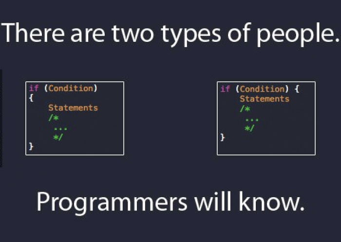

Software Engineering Programsko inženjerstvo
Izv.prof.dr.sc. Irena Galić
Hrvoje Leventić
Predavanje 1b
Clean Code
Sadržaj
- Što je čist kod
- Karakteristike čistog koda
- Coding standardi
- Najčešće preporuke
- Code smells
A lot of code snippets are taken from the book Clean Code: A Handbook of Agile Software Craftsmanship by Robert C. Martin, Prentice Hall, 2009
Što je čist kod

Source: Thom Holwerda
Što je čist kod?
I like my code to be elegant and efficient. The logic should be straightforward to make it hard for bugs to hide, the dependencies minimal to ease maintenance, error handling complete according to an articulated strategy, and per formance close to optimal so as not to tempt people to make the code messy with unprinci pled optimizations. Clean code does one thing well.
Source: Bjarne Stroustrup, izumitelj C++ jezika
Što je čist kod?
I could list all of the qualities that I notice in clean code, but there is one overarching quality that leads to all of them. Clean code always looks like it was written by someone who cares. There is nothing obvious that you can do to make it better. All of those things were thought about by the code’s author, and if you try to imagine improvements, you’re led back to where you are, sitting in appreciation of the code someone left for you—code left by someone who cares deeply about the craft.
Source: Michael Feathers
Što je čist kod?
- Easy to understand.
- Easy to modify.
- Easy to test.
- Works correctly.
Karakteristike čistog koda
Naziv treba otkrivati namjeru
- Iz imena varijable, funkcije ili klase mora biti jasno što ona radi
- Ako je potreban komentar kod imena, ime nije dobro
int d; // elapsed time in days
vs.
int elapsedTimeInDays;
int daysSinceCreation;
int daysSinceModification;
int fileAgeInDays;
Kod se puno češće čita nego piše
void myfun(int *x, int n) {
int i, f=0;
do {
f = 0;
for (i = 0; i < n-1; i++) {
if (x[i] > x[i+1]) {
int t;
t = x[i];
x[i] = x[i+1];
x[i+1] = t;
f = 1;
}
}
} while (f);
}
void swap(int *x, int *y) {
int temp;
temp = *x;
*x = *y;
*y = temp;
}
void bubbleSort(int *array, int number_of_elements) {
int i, sort_flag=0;
do {
sort_flag = 0;
for (i = 0; i < number_of_elements - 1; i++) {
if (array[i] > array[i+1]) {
swap(&array[i], &array[i+1]);
sort_flag = 1;
}
}
} while (sort_flag);
}
Don't be clever!
void bubbleSort(int *array, int number_of_elements) {
int i, sort_flag=1;
while (sort_flag) {
sort_flag = 0;
for (i = 0; i < number_of_elements - 1; i++)
array[i] > array[i+1] ?
swap(&array[i], &array[i+1]), sort_flag++ : continue;
}
} Debugging is twice as hard as writing the code in the first place. Therefore, if you write the code as cleverly as possible, you are, by definition, not smart enough to debug it.
Source: Brian W. Kernighan
Izbjegavanje dezinformacije
- Izbjegavajte izraze koji imaju uvriježeno značenje
-
hp,aix,scosu imena Unix platformi ili varijanti - Je li
accountListstvarno lista? - Dugačka imena koja se malo razlikuju:
XYZControllerForEfficientHandlingOfStrings XYZControllerForEfficientStorageOfStrings - Korištenje malog slova
lili velikog slovaOkao varijable
Imena laka za izgovoriti
class DtaRcrd102 {
private Date genymdhms;
private Date modymdhms;
private final String pszqint = "102";
/* ... */
};
VS.
class Customer {
private Date generationTimestamp;
private Date modificationTimestamp;
private final String recordId = "102";
/* ... */
};
Imena laka za pretraživanje
typedef struct student {
char *name, *lastName;
Course *courses[7];
} Student;
/* ... */
Student student;
/* ... */
for(int i = 0; i < 7; i++)
puts( student.courses[i]->name );
VS.
#define NUMBER_OF_COURSES_PER_STUDENT 7
typedef struct student {
char *name, *lastName;
Course *courses[NUMBER_OF_COURSES_PER_STUDENT];
} Student;
/* ... */
Student student;
/* ... */
for(int i = 0; i < NUMBER_OF_COURSES_PER_STUDENT; i++)
puts( student.courses[i]->name );
Mentalne mape
-
i,j,kkao loop counteri u određenim slučajevima -
rkao lowercase url -
mankao ime studenta s najvećim prosjekom ocjena -
ckao broj studenata s prosjekom većim od 3.5 koji se zovu Pero
Imena klasa
- Imenice:
-
Customer -
Image -
AddressParser -
Visualizer
-
- Ne koristiti glagole
- Izbjegavati riječi
-
Manager -
Processor -
Data -
Info
-
Imena metoda
- Glagoli:
-
postPayment -
deletePage -
fillImageWithZeros -
getEncodedAddress
-
Don't be cute!
-
exterminate()umjestokill() -
endAllSuffering()umjestoabort()
Jedna riječ po konceptu
- Odaberi jednu riječ za neki apstraktni koncept
- Konzistentnost kroz cijeli kod
-
fetch,retrieve, igetsu ekvivalentni koncepti. - Imena funkcija trebaju biti samoopisna (Intellisense)
Semantički ispravne riječi
-
addoznačava zbrajanje ili nadodavanje (concatenation) -
appendiliinsert
Smislen kontekst
- Primjer adrese
-
firstName,lastName,street,houseNumber,city,state,country - Dodati prefix
-
addrFirstName,addrLastName,addrStreet... - Još bolje - klasa
Address
Funkcije
The first rule of functions is that they should be small. The second rule of functions is that they should be smaller than that.
Source: Clean Code: A Handbook of Agile Software Craftsmanship, Robert C. Martin, Prentice Hall, 2009
- Funkcije trebaju odrađivati jednu i samo jednu stvar
Single Responsibility Principle
- Svaki modul ili klasa trebaju biti odgovorni za samo jedan dio funkcionalnosti
- Potpuna enkapsulacija
- Svaka klasa treba imati samo jedan razlog za promjenu
- Primjer modul za sastavljanje i printanje izvješća
Komentari
Good code is its own best documentation. As you’re about to add a comment, ask yourself, ‘How can I improve the code so that this comment isn’t needed?’ Improve the code and then document it to make it even clearer.
Source: Steve McConnel
- Nužno zlo
- Komentari lažu
- Teški su za održavanje
- Uz dobre nazive komentari su suvišni
- Bolje je više manjih jednostavnih funkcija
- Ne odnosi se na Public API
Komentari
//When I wrote this, only God and I understood what I was doing
//Now, God only knows
Source: Stack Overflow: What is the best comment in source code you have ever encountered
- Ne komentirati očite stvari
return 1; // returns 1 - Ponovno: Don't be cute!
/* * Replaces with spaces * the braces in cases * where braces in places * cause stasis. **/ $str = str_replace(array("\{","\}")," ",$str);
Dobri komentari
- Objašnjenje namjere - razlog zašto, a ne kako
//This is our best attempt to get a race condition //by creating large number of threads. for (int i = 0; i < 25000; i++) { WidgetBuilderThread widgetBuilderThread = new WidgetBuilderThread(widgetBuilder, text, parent, failFlag); Thread thread = new Thread(widgetBuilderThread); thread.start(); } - Upozorenje o posljedicama:
public static SimpleDateFormat makeStandardHttpDateFormat() { //SimpleDateFormat is not thread safe, //so we need to create each instance independently. SimpleDateFormat df = new SimpleDateFormat("EEE, dd MMM yyyy HH:mm:ss z"); df.setTimeZone(TimeZone.getTimeZone("GMT")); return df; }
Formatiranje koda
Formatiranje koda
- Formatiranje koda je bitno
- Svatko misli da je njegov način najbolji
- Treba se dogovoriti oko standarda i pridržavati ga se
- Podijeliti funkcionalnost u fileove prema konvencijama jezika
Vertikalno formatiranje
- Izbjegavati ogromne fileove
- High-level funkcije na vrh, detalji niže
- Vizualno odvojiti bitne dijelove (npr. metode)
- Konceptualno slične dijelove koda smjestiti jedne blizu drugih
Horizontalno formatiranje
- Razmaci naglašavaju bitne akcije
private void measureLine(String line) { lineCount++; int lineSize = line.length(); totalChars += lineSize; lineWidthHistogram.addLine(lineSize, lineCount); recordWidestLine(lineSize); } - Horizontalno poravnavanje
int times = input.GetDimension_T(); int slices = input.GetDimension_S(); int rows = input.GetDimension_R(); int columns = input.GetDimension_C();
Indentation
double mindist=input.GetDimension_S();
for( unsigned int s = 0; s < input.GetDimension_S(); ++s ) {
for( unsigned int r = 0; r < input.GetDimension_R(); ++r ) {
for( unsigned int c = 0; c < input.GetDimension_C(); ++c ) {
if( input(s,r,c) ) {
candidate.SetIndex(s,r,c);
if( startvox.DistanceEuclidean(candidate) < mindist) {
minvox.SetIndex(s,r,c);
mindist = startvox.DistanceEuclidean(candidate);
}
}
}
}
}
start = minvox;
Indentation
double mindist=input.GetDimension_S();
for( unsigned int s = 0; s < input.GetDimension_S(); ++s ) {
for( unsigned int r = 0; r < input.GetDimension_R(); ++r ) {
for( unsigned int c = 0; c < input.GetDimension_C(); ++c ) {
if( input(s,r,c) ) {
candidate.SetIndex(s,r,c);
if( startvox.DistanceEuclidean(candidate) < mindist) {
minvox.SetIndex(s,r,c);
mindist = startvox.DistanceEuclidean(candidate);
} } } } }
start = minvox;
Horizontalna širina
- Povjesni razlozi za 80 znakova
- Danas preporuke su oko 72 znaka
- Ne više od 100
void vmxVisualizer::SetMesh(int number, mxImage &img, int mesh_value,
double opacity, double red, double green,
double blue, const char *img_name)
{
VS
void vmxVisualizer::SetMesh(int number, mxImage &img, int mesh_value, double opacity, double red, double green, double blue, const char *img_name)
{
Koding standardi
- Uključuju sve navedeno
- Dogovor unutar tima
- Konzistentnost!
- Preporuka: Making Wrong Code Look Wrong, Joel Spolsky, 2005
- Na LV: Python PEP8
- Dobar početak: Style guides for Google-originated open-source projects
Za kraj
Always code as if the person who ends up maintaining your code will be a violent psychopath who knows where you live.